Prueba en Windows: menú de usuario y Guía rápida
19 de octubre de 2026 · America/Santiago · rama feat/web-menu-usuario-114 · código de la app: 3863172.
Entorno y alcance
Microsoft Edge 155, modo headless, ejecutado en Windows (Win32). App local en 127.0.0.1:5173 y mock del contrato en 127.0.0.1:4010. La respuesta GET /yo fue 200 y mostró Prevencionista de turno, rol prevencionista. Esta sesión verifica la interfaz contra el mock; no valida el backend real ni el detector.
Escritorio: 1440 × 1000. Ventana estrecha: 390 × 844, sin emulación de un teléfono físico. No se usaron teclas de macOS.
Los datos del panel de fondo son ejemplos de Prism: el 0 % en Hallazgos abiertos y la severidad Baja en críticos recientes son inconsistencias del mock, documentadas en el README de evidencias.
Safari: el usuario confirmó el 19-oct-2026 que ya se contrastó el comportamiento y funcionó. Esa comprobación fue informada por el usuario; esta sesión automatizada corresponde exclusivamente a Windows y Edge.
Resultado
Los 18 pasos del recorrido pasaron. Tab llegó a Guía rápida sin modificadores adicionales. Shift+Tab llevó el foco a Finalizar y Tab volvió a Cerrar. Finalizar tuvo focusVisible=true y un contorno sólido de 2 px. Las cuatro tarjetas quedaron dentro del viewport estrecho y sin desborde horizontal del diálogo.
La consola registró dos errores 404 de favicon.ico; no impidieron el recorrido. No se observaron otros errores de consola durante esta sesión.
Preparación: se restauraron las dependencias con npm ci --ignore-scripts porque Vite no estaba disponible. Un intento de levantar otro mock terminó con EADDRINUSE; se utilizó el mock ya activo. El primer intento de pasar el guion en la línea de comandos superó el límite de Windows; se ejecutó mediante --filename. El guion se repitió para guardar el resultado estructurado y sus capturas finales.
Resultados y entorno · Guion reproducible · Salida del recorrido · Salida final de la suite web
Reproducción desde la raíz del repositorio, con la web y el mock activos: abrir la sesión issue114win mediante playwright-cli open http://127.0.0.1:5173 --browser msedge y ejecutar playwright-cli --session issue114win run-code --filename con la ruta de recorrido.js. El guion conserva las capturas en output/playwright dentro de esta carpeta.
Esta sesión de pruebas no sustituye la revisión independiente del diff requerida por AGENTS.md.
Suite web y revisión de evidencia
Se ejecutaron npm run lint, npm run typecheck, npm test y npm run build. Lint y tipos pasaron. La corrida final fuera del sandbox informó literalmente: Test Files 24 passed (24), Tests 352 passed (352) y 1971 modules transformed; el build terminó correctamente.
La primera corrida dentro del sandbox falló en Vitest con ENOENT sobre un archivo temporal del entorno restringido: Test Files 23 failed | 1 passed (24). Se conserva en la salida inicial. La salida final completa contiene los cuatro comandos aprobados fuera del sandbox, sobre el mismo código de la app.
Se inspeccionaron visualmente los 18 pantallazos y se comprobaron los 18 enlaces de imagen y los 18 pies con los cuatro campos. La ventana estrecha corresponde a un navegador de escritorio redimensionado. No se cambió código de la aplicación durante esta prueba.
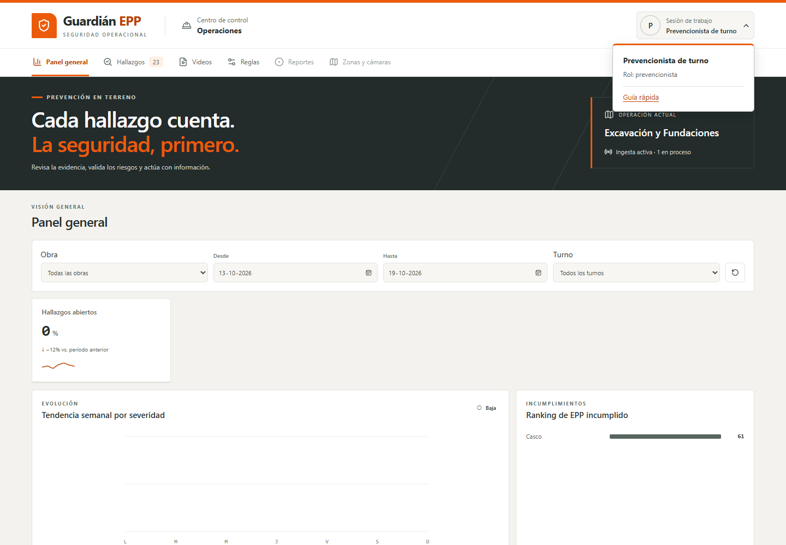
01-menu-escritorio.png
Prueba realizada: Abrir el menú con clic.
Resultado esperado: Nombre, rol, Guía rápida y aria-expanded=true.
Resultado observado: Prevencionista de turno, rol prevencionista y Guía rápida visibles; aria-expanded=true.
Estado: Pasó
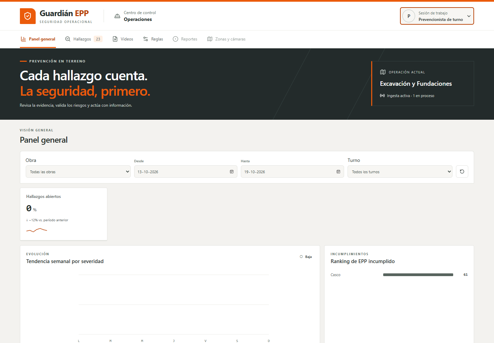
02-menu-escape.png
Prueba realizada: Cerrar el menú con Escape.
Resultado esperado: Menú cerrado y foco en el usuario.
Resultado observado: {"texto":"Menú de usuario: Prevencionista de turno","focusVisible":true,"outline":"rgb(185, 67, 8) solid 2px"}
Estado: Pasó
03-menu-tab.png
Prueba realizada: Abrir con Enter y avanzar con Tab.
Resultado esperado: Tab llega a Guía rápida sin teclas adicionales.
Resultado observado: {"texto":"Guía rápida","focusVisible":true,"outline":"rgb(185, 67, 8) solid 2px"}
Estado: Pasó
04-paso-1.png
Prueba realizada: Abrir la guía con Enter.
Resultado esperado: 1 de 4; Anterior deshabilitado; foco en Cerrar.
Resultado observado: {"texto":"Cerrar guía rápida","focusVisible":true,"outline":"rgb(185, 67, 8) solid 2px"}
Estado: Pasó
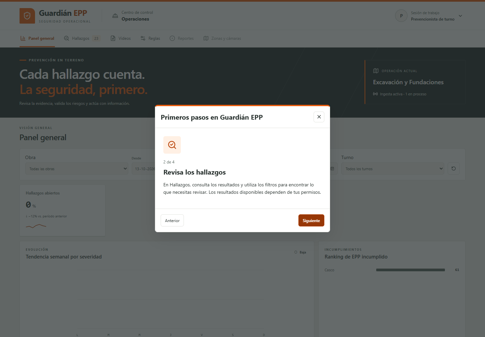
05-paso-2.png
Prueba realizada: Pulsar Siguiente.
Resultado esperado: 2 de 4; Revisa los hallazgos.
Resultado observado: Contador y título correctos.
Estado: Pasó
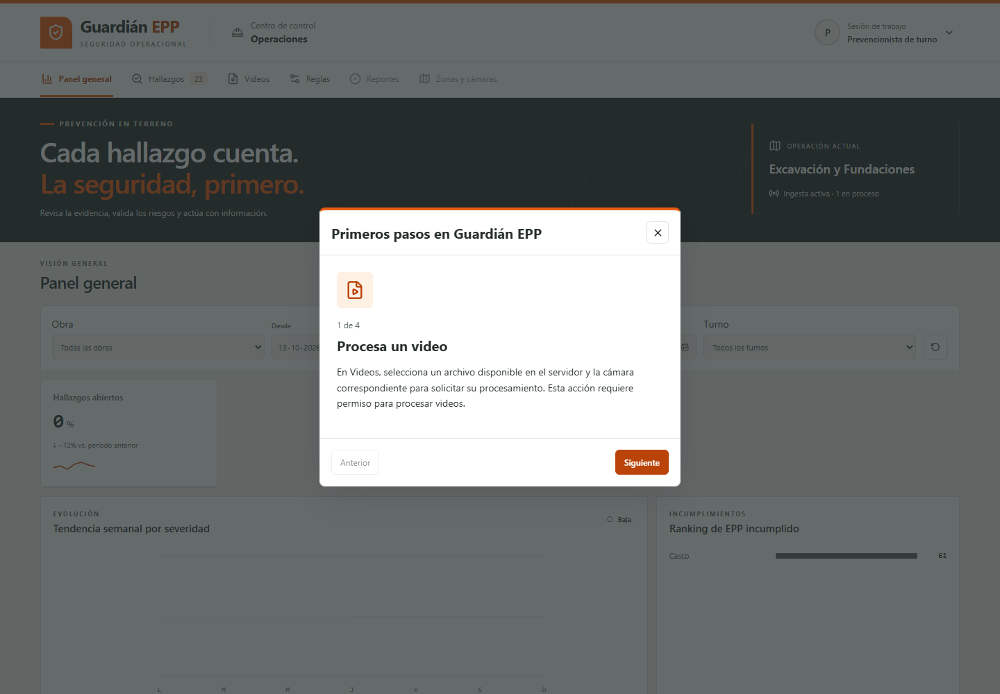
06-anterior.png
Prueba realizada: Pulsar Anterior.
Resultado esperado: Regreso a 1 de 4.
Resultado observado: Se vuelve a Procesa un video.
Estado: Pasó
07-paso-3.png
Prueba realizada: Avanzar a la tercera tarjeta.
Resultado esperado: 3 de 4; Valida la evidencia.
Resultado observado: Contador y título correctos.
Estado: Pasó
08-paso-4.png
Prueba realizada: Avanzar a la última tarjeta.
Resultado esperado: 4 de 4; contacto ficticio y Finalizar.
Resultado observado: Contador, contacto ficticio y Finalizar visibles; Siguiente ausente.
Estado: Pasó
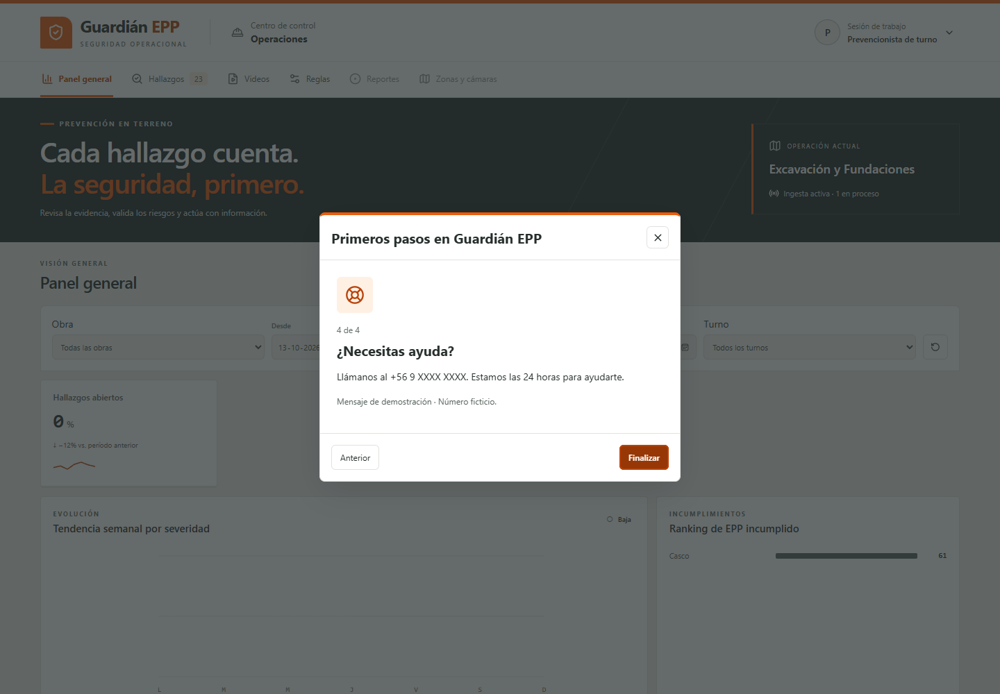
09-foco-finalizar.png
Prueba realizada: Desde Cerrar, pulsar Shift+Tab.
Resultado esperado: Foco en Finalizar dentro del diálogo con indicador visible.
Resultado observado: {"texto":"Finalizar","focusVisible":true,"outline":"rgb(185, 67, 8) solid 2px"}
Estado: Pasó
10-guia-escape.png
Prueba realizada: Pulsar Tab y después Escape.
Resultado esperado: Tab vuelve a Cerrar; Escape cierra y devuelve el foco al usuario.
Resultado observado: {"texto":"Menú de usuario: Prevencionista de turno","focusVisible":true,"outline":"rgb(185, 67, 8) solid 2px"}
Estado: Pasó
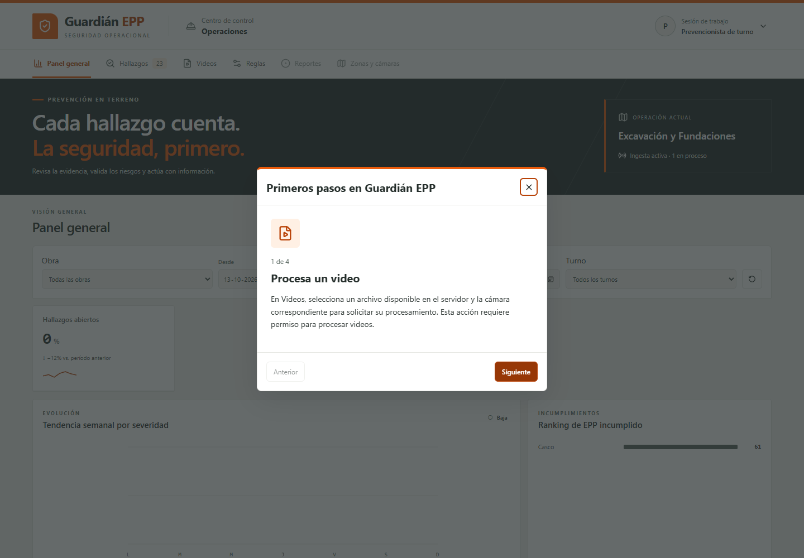
11-reapertura.png
Prueba realizada: Reabrir con Enter, Tab y Enter.
Resultado esperado: Reinicio en 1 de 4.
Resultado observado: Primera tarjeta visible; Anterior deshabilitado.
Estado: Pasó
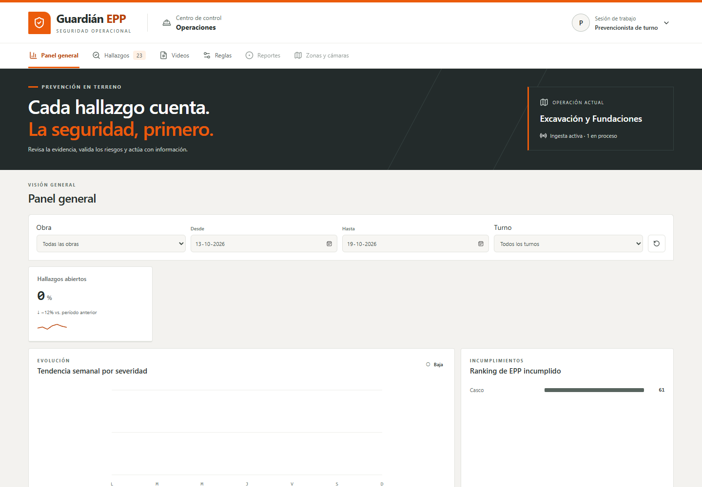
12-finalizar.png
Prueba realizada: Recorrer y pulsar Finalizar.
Resultado esperado: Cierre, retorno del foco y URL conservada.
Resultado observado: {"texto":"Menú de usuario: Prevencionista de turno","focusVisible":false,"outline":"rgb(37, 46, 43) none 3px"}; URL sin cambios.
Estado: Pasó
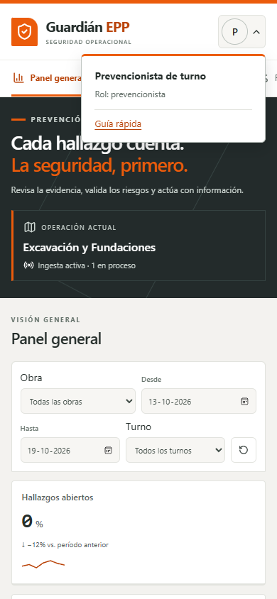
13-menu-estrecho.png
Prueba realizada: Abrir el menú en 390 × 844.
Resultado esperado: Menú legible dentro de la ventana.
Resultado observado: Nombre, rol y Guía rápida visibles.
Estado: Pasó
14-estrecho-paso-1.png
Prueba realizada: Mostrar la tarjeta 1 en ventana estrecha.
Resultado esperado: 1 de 4; texto y controles dentro del viewport.
Resultado observado: {"x":16,"right":374,"y":210.21875,"bottom":633.78125,"scrollWidth":356,"clientWidth":356,"viewportWidth":390,"viewportHeight":844}
Estado: Pasó
15-estrecho-paso-2.png
Prueba realizada: Mostrar la tarjeta 2 en ventana estrecha.
Resultado esperado: 2 de 4; texto y controles dentro del viewport.
Resultado observado: {"x":16,"right":374,"y":210.21875,"bottom":633.78125,"scrollWidth":356,"clientWidth":356,"viewportWidth":390,"viewportHeight":844}
Estado: Pasó
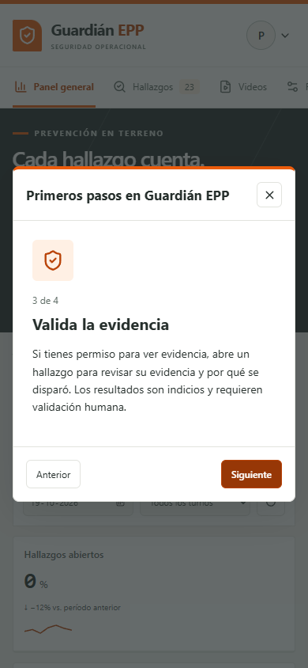
16-estrecho-paso-3.png
Prueba realizada: Mostrar la tarjeta 3 en ventana estrecha.
Resultado esperado: 3 de 4; texto y controles dentro del viewport.
Resultado observado: {"x":16,"right":374,"y":210.21875,"bottom":633.78125,"scrollWidth":356,"clientWidth":356,"viewportWidth":390,"viewportHeight":844}
Estado: Pasó
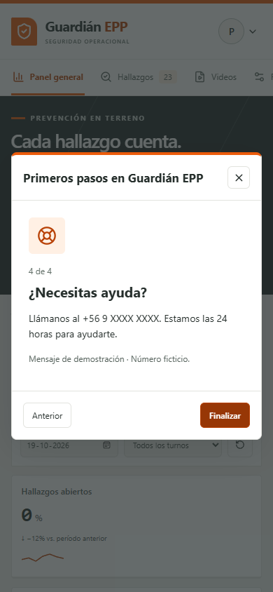
17-estrecho-paso-4.png
Prueba realizada: Mostrar la tarjeta 4 en ventana estrecha.
Resultado esperado: 4 de 4; texto y controles dentro del viewport.
Resultado observado: {"x":16,"right":374,"y":217.015625,"bottom":626.984375,"scrollWidth":356,"clientWidth":356,"viewportWidth":390,"viewportHeight":844}
Estado: Pasó
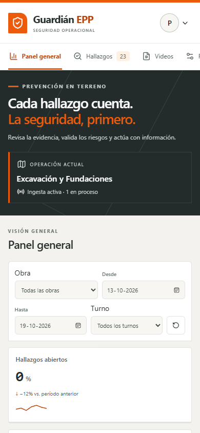
18-cerrar-estrecho.png
Prueba realizada: Cerrar con el botón en ventana estrecha.
Resultado esperado: Diálogo cerrado y foco en el usuario.
Resultado observado: {"texto":"Menú de usuario: Prevencionista de turno","focusVisible":false,"outline":"rgb(37, 46, 43) none 3px"}
Estado: Pasó